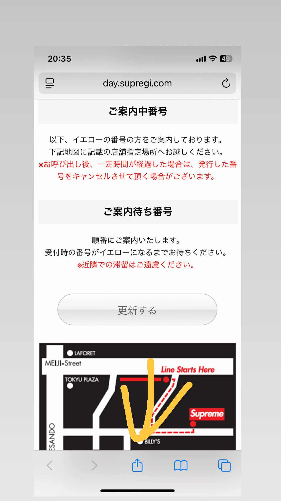
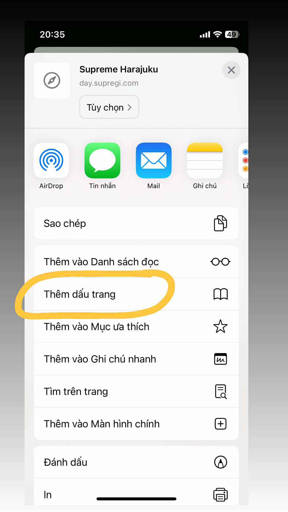
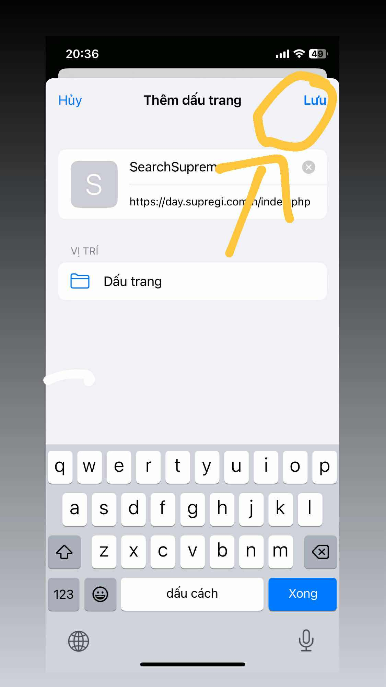
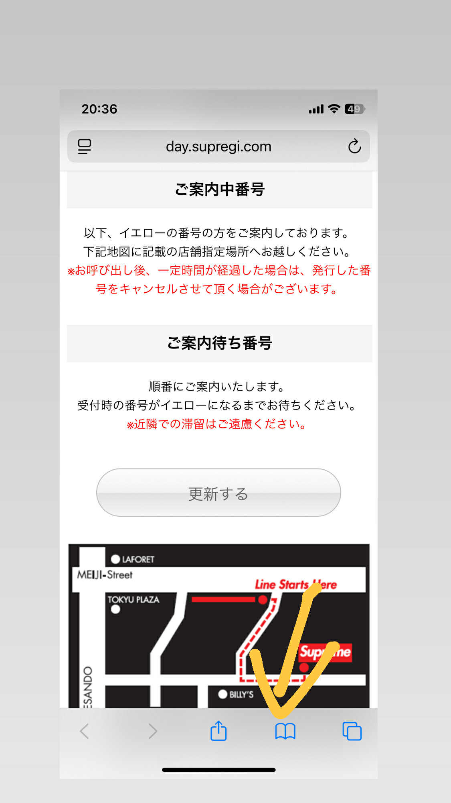
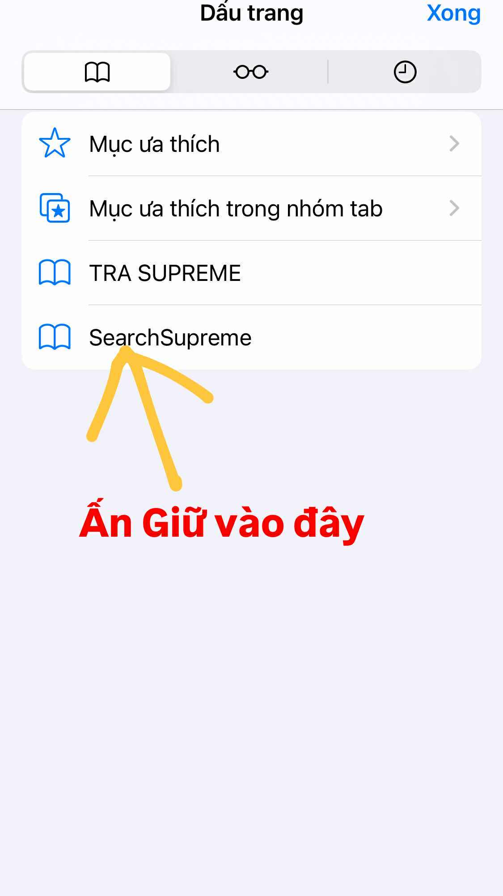
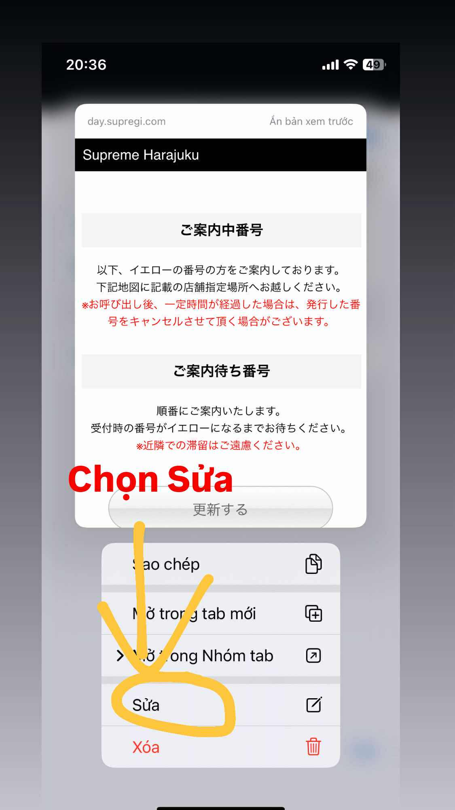
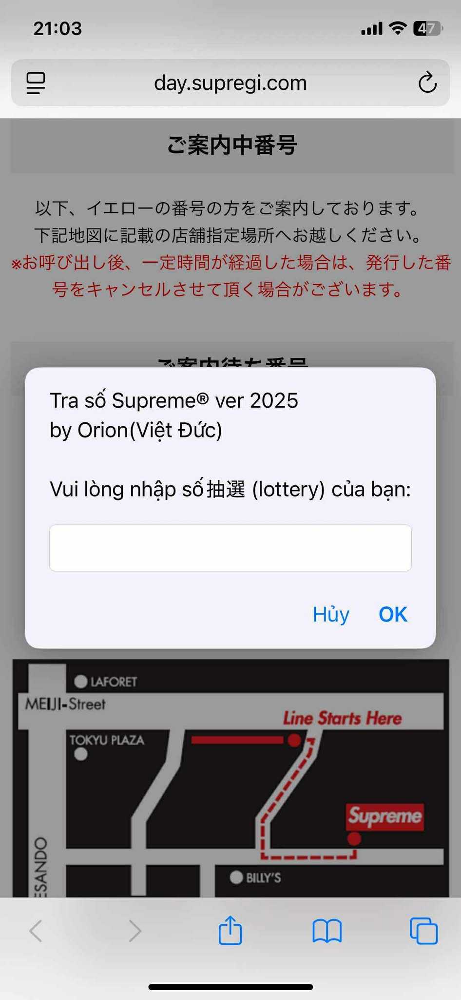

Hướng dẫn cài SearchSupreme trên Safari cho ae STVN
Phiên bản hướng dẫn: v25 by Orion (VIỆT ĐỨC)
Trang này giúp bạn copy mã SearchSupreme vào Safari trên iPhone. Làm theo các bước bên dưới,
khoảng 1–2 phút.Dưới cùng có hướng dẫn bằng hình ảnh .
① Copy mã SearchSupreme
Bấm nút bên dưới để sao chép mã bookmarklet SearchSupreme vào clipboard.
② Tạo bookmark rỗng
- Mở Safari trên iPhone.
- Mở bất kỳ trang web nào (ví dụ
https://day.supregi.com/h/index.php).
- Bấm nút Chia sẻ (hình vuông có mũi tên ↑) → chọn Thêm Dấu trang (Add Bookmark).
- Đặt tên gợi nhớ, ví dụ: SearchSupreme → bấm Lưu.
③ Dán mã vào bookmark
- Trong Safari, mở Dấu Trang → giữ vào SearchSupreme → chọn Sửa (Edit).
- Tại ô Địa chỉ (URL), xoá nội dung cũ rồi dán mã đã copy ở bước ①
- Lưu lại.
④ Cách sử dụng
- Mở trang kết quả抽選 / gọi số của Supreme (trang chính thức).
- Đợi trang tải hoàn tất.
- Mở Bookmark → chạm vào SearchSupreme để chạy.
📸 Hướng dẫn bằng hình ảnh
-
Chọn Vào 1 trang Web bất kì sau nhấn nút ↑

-
Chọn Thêm dấu trang

-
Đặt tên SearchSupreme rồi Lưu

-
Chọn Mở dấu trang

-
Ấn giữ vào SearchSupreme

-
Chọn Sửa

-
Dán mã đã copy ở bước 1 vào ô Địa chỉ
-
Sau đó mở trang chyusen bất kì nào Supreme và nhấn vào dấu trang
-
Rồi chọn SearchSupreme và tra số

Vì đây là code mình viết riêng cho ae Trong Coock mình dùng nên mong không share ra ngoài.Cảm ơn